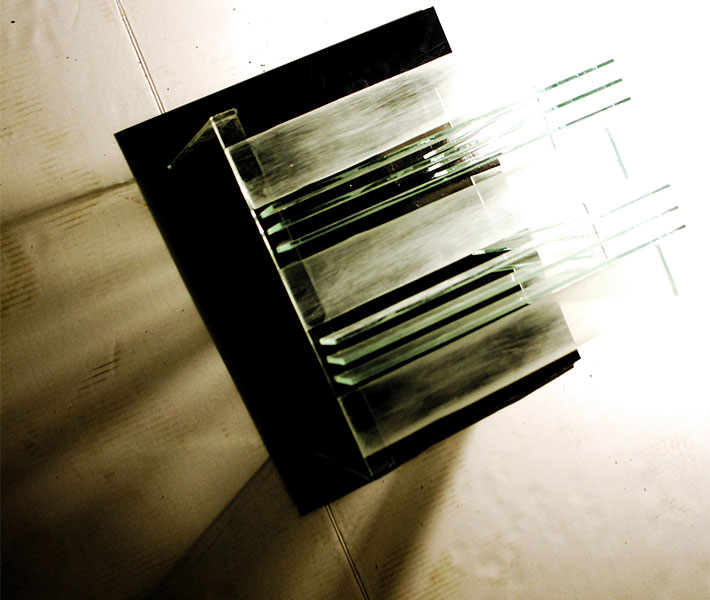
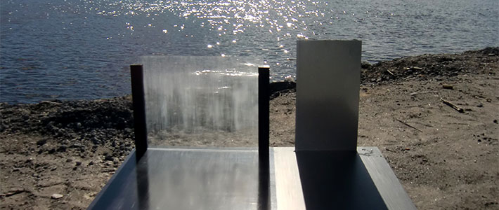
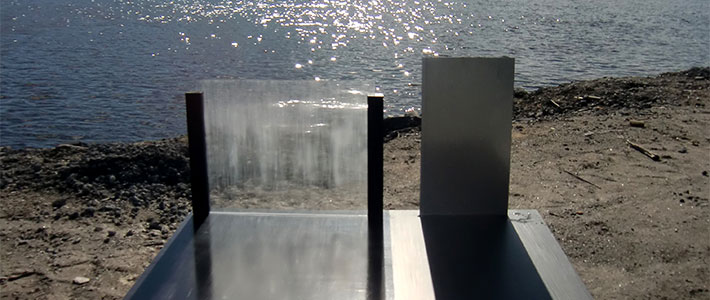
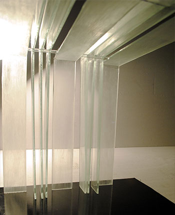
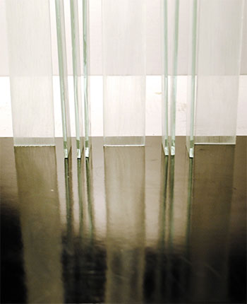
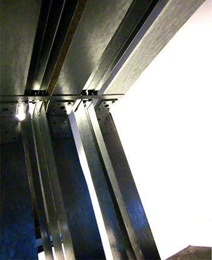
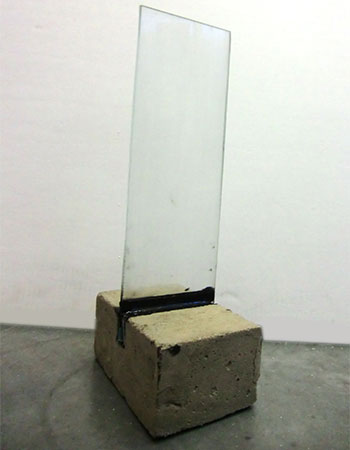
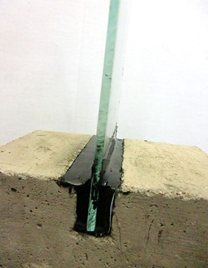

Umeå School of Architecture
2nd semester/spring 2012
Material workshop
Material poetry
Material and detail workshop where my group worked with different kinds of reflections depending on the material of the floor and the columns. Our starting point was the wooden model above.
Group members
Johanna Boström, Anna Carlsson, Fritjof Kyander, Maxine Lundström and Gustaf Ridderström

 





